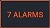
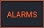
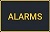
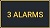
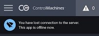

ControlMachines™ Mobile App#
Brief information about the mobile application
Application overview#
The mobile application is a ControlMachines™ component for mobile devices. The main functions of Mobile COM are:
- Monitoring of alarms
- Monitoring of tags.
The application display consists of the following elements:
- Main screen
- Alarms screen
- General menu
Main screen#
A user can see available projects on the main screen. The main screen displays the following information:
- Project name and its address
- Number of active alarms
- Tag values
- Tag history chart
The screen is interactive:
- Tapping the project name opens a web browser with HMI
- Tapping the alarms button opens the alarm screen of a particular project
- Tapping the tag expands or collapses the field with the tag history
The top of the screen contains the options button and the alarms button. The first opens the options drawer, and the second opens the alarms screen.
Alarm icons and their meanings#
Alarm icons have different colours to indicate various states of alarms:
-  the project has at least active unacknowledged and unshelved alarm. The digit shows the total number of unacknowledged alarms, both active and inactive
-  the project has only active acknowledged alarms
-  the project has only active and inactive shelved alarms. Also, this icon signals that the project has at least one active signal watcher
-  the project has inactive unacknowledged alarms
 the project has no active or inactive alarms and signal watchers.
the project has no active or inactive alarms and signal watchers.
Alarms screen#
The Alarms screen displays alarms and signal watchers. Users can see warnings from the projects that have Show alarms mode activated.
Users can see the following alarms:
- Active and unacknowledged
- Active and acknowledged
- Inactive and unacknowledged
- Shelved and acknowledged
- Shelved and unacknowledged
There is a filter button on top of the screen. Users can filter alarms by their priority.
General menu#
The General menu contains the list of available types and projects.
Different project types have different colours. Green and red indicators show whether a project has active unacknowledged alarms. Also, you can see Settings and Log out buttons.
The settings menu contains main display options for projects. Users can:
- Set the period for chart display
- Set the visibility of types
- Set the order of project appearance within types (alphabetical or reverse)
- Set the visibility of projects within types
- Set the visibility of particular project tags
- Set the visibility of project alarms
Offline mode#
If the application lost connection with Cloud, the following icon appears on top of the main screen and the alarm screen.

Parent article:
- ControlMachines™ HMI user guide
Home page of ControlMachines™ HMI user guide.